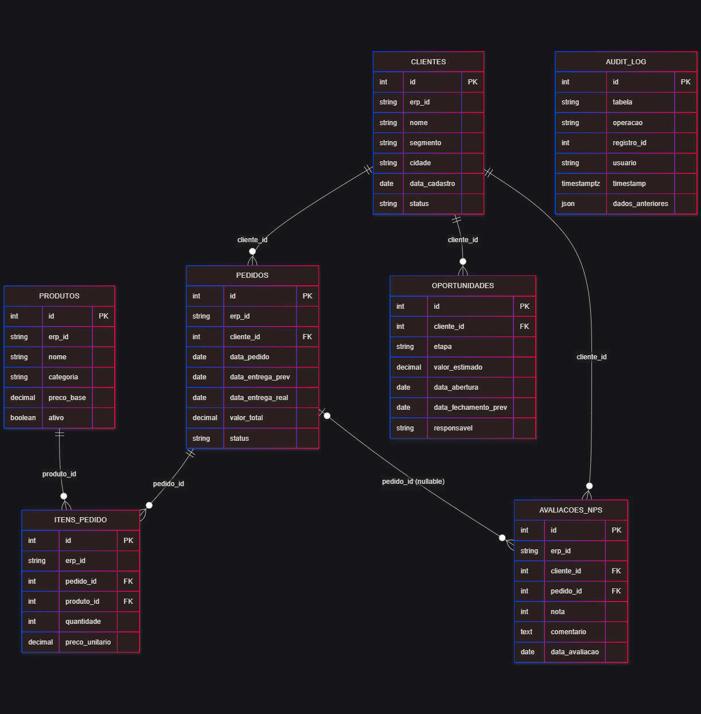

NexusVendas
Inteligência comercial e experiência do cliente em um único painel.
Transação → Regra de Negócio → Insight → Ação
Boa tarde. Este é o NexusVendas, um módulo de inteligência comercial e experiência do cliente integrado ao ERP. O produto conecta transações, regras de negócio, insights e ações. Por isso, nosso slogan é: Venda mais. Perca menos. Decida melhor.
O dado existe. A decisão chega tarde.
O gestor consulta planilhas diferentes para entender o pipeline.
O vendedor não sabe qual oportunidade ou cliente priorizar.
O time de CX percebe o risco depois que o cancelamento já aconteceu.
Inspirado no SAP Sales Cloud, com escopo e complexidade adequados a médias empresas.
Empresas de médio porte costumam ter os dados de vendas, relacionamento e satisfação separados. O gestor não enxerga o pipeline completo, o vendedor perde follow-ups e o time de CX percebe o risco de cancelamento tarde demais.
O NexusVendas concentra esses sinais em um painel e transforma dados em ações recomendadas. A inspiração é o SAP Sales Cloud, mas com escopo adequado a uma empresa média.
Uma dor, três pontos de vista
Precisa enxergar metas, pipeline e gargalos em um só lugar.
Precisa saber qual oportunidade ou follow-up vem primeiro.
Precisa agir antes que a insatisfação vire churn.
O Gerente Comercial precisa enxergar o funil; o Vendedor precisa priorizar seus próximos contatos; e o Analista de CX precisa agir antes do churn.
A user story central é a do Analista de CX: receber clientes sem pedido há pelo menos 90 dias, com ticket médio e ação sugerida. A plataforma não apenas informa que existe um problema: ela ajuda a decidir o próximo passo.
Churn explicável e acionável
O primeiro insight é o risco de churn. Na amostra, a Beta está há 118 dias sem comprar e possui ticket médio de R$ 4.200 por pedido.
A regra é determinística: para clientes sem pedido há 90 dias ou mais, calculamos o tempo sem compra e o ticket médio. Para tickets acima de R$ 3.000, a ação sugerida é uma oferta de reativação com 10% de desconto.
Em portucode: pegamos o último pedido não cancelado; se não houver pedido, usamos a data de cadastro. Subtraímos essa data da data de referência. Se o resultado for 90 ou mais, geramos o risco. A mesma entrada sempre produz a mesma saída.
Isso não é apresentado como machine learning. É uma heurística explicável, adequada ao MVP.
Da satisfação ao funil: duas ações imediatas
Gama Serviços
Três avaliações consecutivas ≤ 6.
Ação: acionar Customer Success imediatamente.
Proposta → negociação
Estoque desbalanceado entre etapas.
Ação: revisar a abordagem comercial.
O segundo insight é NPS crítico. A Gama Serviços possui três avaliações consecutivas de 5, 4 e 3. A regra identifica a sequência de notas iguais ou menores que 6 e recomenda acionar Customer Success.
O terceiro insight é o gargalo do funil: existem 9 oportunidades em proposta e apenas 2 em negociação. Isso representa 22,2%, abaixo da meta de 30%. A ação é revisar a abordagem comercial nessa etapa.
O funil conta o estoque atual por etapa e divide a próxima etapa pela anterior. Sem histórico de transições, isso é uma proporção operacional, não uma conversão histórica.
Um modelo relacional que preserva contexto

Clique para ampliar- Cliente se relaciona com pedidos, oportunidades e NPS.
- Pedido possui itens e preserva o preço histórico.
- Audit log registra alterações e sincronizações.
- 4 anomalias sustentam os cenários de teste.
ERP: fonte oficial de clientes, pedidos, produtos, itens e avaliações. NexusVendas/RDS: cópia otimizada para consulta, com erp_id para idempotência, mais oportunidades e audit_log nativos do módulo.
clientes 1→N pedidos 1→N itens_pedido N→1 produtos · clientes 1→N oportunidades · clientes 1→N avaliacoes_nps
O banco possui 7 tabelas: clientes, pedidos, itens de pedido, produtos, oportunidades, avaliações NPS e audit log.
Em itens de pedido, o preço unitário é armazenado como snapshot. Se o catálogo mudar amanhã, o valor histórico do pedido não muda.
A diferença para a base do ERP é de responsabilidade: o ERP continua sendo a fonte transacional; o RDS do NexusVendas é uma projeção sincronizada para leitura e regras de insight. O módulo ainda possui tabelas próprias para oportunidades e auditoria.
A amostra tem 10 clientes, 12 pedidos, 20 oportunidades e 10 avaliações. As quatro anomalias documentadas alimentam os cenários de teste de atraso, churn, NPS e gargalo do funil.
Contratos simples, acesso controlado
TLS protege o canal → JWT prova identidade → API valida assinatura, issuer, audience e expiração → RBAC decide a permissão.
A API tem 10 endpoints REST, implementados em Node.js com Express e organizados em Controller, Service e Repository.
O endpoint principal é GET /insights/churn-risk?dias=90, que retorna os clientes, os dias sem compra, o ticket médio e a ação sugerida.
A autenticação usa o JWT emitido pelo IdP do ERP. O módulo valida o token e aplica RBAC para admin, gerente e vendedor.
É importante separar os dois handshakes: o TLS cria o canal HTTPS cifrado; depois o authMiddleware valida o JWT, conferindo assinatura, issuer, audience, expiração e role. Token inválido dá 401; token válido sem permissão dá 403.
O painel responde: “o que faço agora?”
Dashboard, pedidos, detalhe do cliente, funil e alertas formam uma sequência de decisão.
A interface usa azul para a operação, âmbar para atenção e vermelho para criticidade, com tipografia Inter.
O dashboard resume as decisões principais: vendas do último mês fechado de R$ 37.600, variação de +166,7%, NPS -10 e três alertas de churn.
As telas levam o usuário do indicador até a ação recomendada.
Um MVP simples de operar e pronto para crescer
Experiência
React + Vite S3 + CloudFront Dashboard e wireframesAplicação
Node.js + Express Elastic Beanstalk JWT + camadasDados
PostgreSQL no RDS Audit log Backups gerenciadosEventBridge agenda a SyncJob diária.
Lambda lê em páginas e faz UPSERT por erp_id; repetir não duplica.
Logs e métricas ficam no CloudWatch.
No MVP, o frontend React com Vite é servido por S3 e CloudFront. A API Node.js roda no Elastic Beanstalk e o PostgreSQL fica no RDS.
O EventBridge agenda a sincronização diária do ERP por uma Lambda, que executa UPSERTs e registra o processamento no audit log.
Em portucode: a Lambda lê em páginas, atualiza pais antes dos filhos e usa erp_id como chave única. Se cair e rodar de novo, INSERT vira UPDATE no mesmo registro; não duplica. O checkpoint só avança quando todas as páginas terminam.
Oportunidades são nativas do NexusVendas: a API valida a etapa, salva o estado atual e registra antes/depois no audit log. A tabela não guarda transições históricas, por isso o funil atual mede estoque por etapa.
Escolhemos PostgreSQL porque o domínio é relacional e possui JOINs entre clientes, pedidos, itens, produtos e oportunidades.
Começar explicável. Escalar quando fizer sentido.
Curto · 0–6 meses
Deploy AWS, JWT, CloudWatch, onboarding e estabilização do MVP.
Médio · 6–18 meses
Redis para insights, SQS para notificações, exportação e aplicativo móvel.
Longo · 18–36 meses
ML para churn, microsserviços e multitenancy com SageMaker.
Cache, filas, read replica e ML entram conforme volume, maturidade e retorno justificarem.
No curto prazo, priorizamos deploy, autenticação, observabilidade e onboarding. No médio prazo, entram Redis, SQS, exportação e aplicativo móvel. No longo prazo, entram ML para churn, microsserviços e multitenancy.
O MVP foi estimado em aproximadamente US$ 21 a 51 por mês, considerando Beanstalk, RDS, S3 e CloudFront em configuração básica. ML é evolução, não uma promessa do MVP.
O MVP fecha o ciclo e permite auditoria
Banco relacional documentado, API protegida, regras testáveis, interface coerente e arquitetura implantável.
O MVP entrega o ciclo completo: banco relacional documentado, API protegida, três regras de insight, dashboard, telas de apoio e arquitetura de implantação.
Os números apresentados são reproduzíveis na amostra: R$ 37.600 em vendas de outubro de 2024, NPS -10, Beta com 118 dias sem compra e gargalo de 22% no funil.
Venda mais. Perca menos. Decida melhor.
Obrigado. Estou à disposição para as perguntas.
O NexusVendas resolve um problema concreto com tecnologia proporcional ao porte do cliente. Ele conecta transação, regra de negócio, insight e ação. Começamos com regras explicáveis e uma arquitetura preparada para evoluir. Obrigado. Estou à disposição para as perguntas.